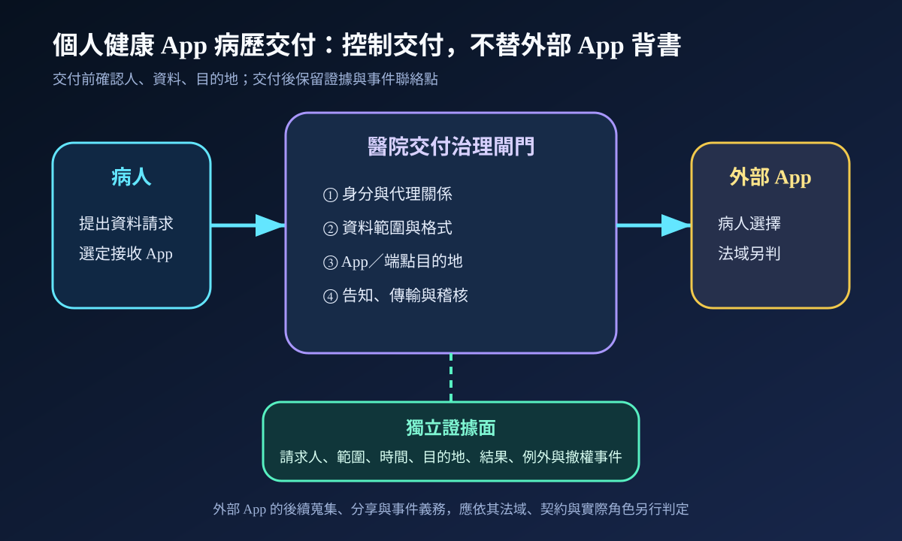
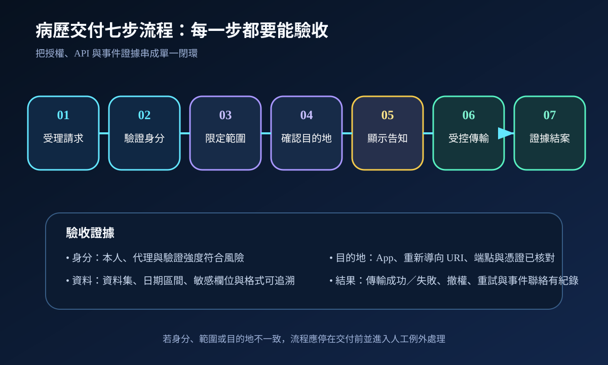
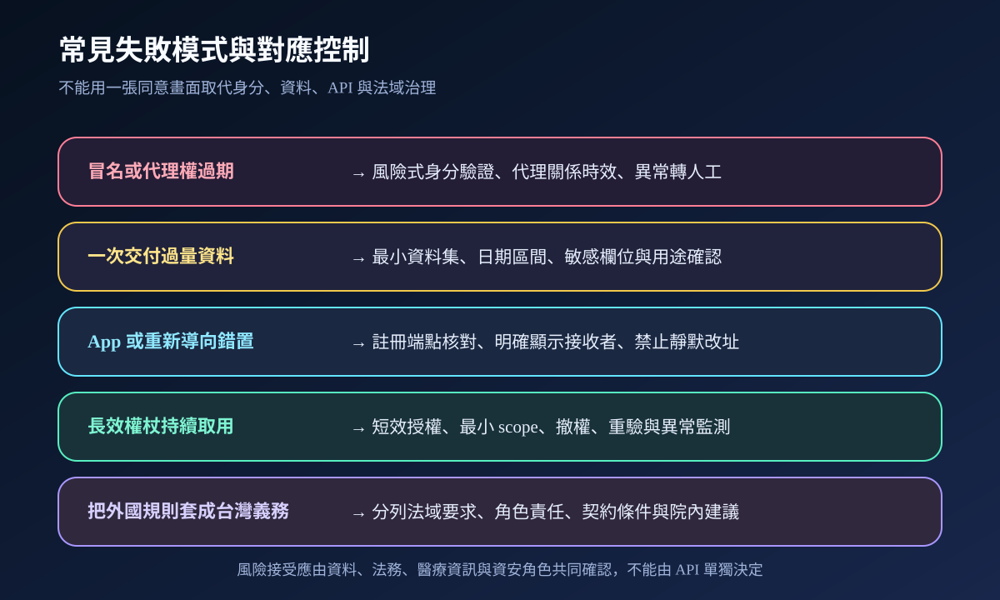

醫療資安國際觀察 · 2026-11-21
病歷交付個人健康 App 時如何守住邊界：從病人授權到可追溯傳輸
作者：Dr. William｜醫療資訊與資安治理實務工作者
病人把電子病歷送進自行選擇的健康 App 時，醫院需要同時維持資料可攜權、交付正確性與可追溯性，且不能把外部 App 誤當成院內受控系統。
名詞解釋：資料交付、App 授權與責任邊界
資料交付是依病人請求，將指定電子健康資料以下載、API 或其他電子方式送往病人選定目的地。App 授權通常透過 OAuth 2.0／SMART App Launch 等機制限制應用程式可取得的資料與時間。責任邊界則區分醫院在交付前的身分、範圍與傳輸控制，以及資料進入外部 App 後由該服務、契約與適用法域承擔的後續責任。
國際現況與適用邊界
美國 HHS 於 2026 年 11 月公布 HIPAA Privacy Rule 最終規則，將個人取得電子受保護健康資訊的方式進一步涵蓋由個人指定的健康 App；美國 ONC 的認證 API 條件則持續以 SMART App Launch 與 OAuth 2.0 支援病人選擇應用程式及標準化授權。FTC 的 Health Breach Notification Rule 適用於其管轄範圍內的個人健康紀錄服務及相關業者；2026 年撤回舊政策聲明並未撤銷該規則。
台灣適用原則：美國 HIPAA、ONC 認證條件與 FTC 通報義務不直接成為台灣醫院的法定要求。可借用其控制概念，依台灣法規、醫院政策、資料交換契約與實際技術角色，建立病人身分、資料最小化、目的地確認、撤權、事件聯絡及證據保存。
規劃：先定義交付服務而非只開一組 API
治理範圍應涵蓋病人本人、法定代理、病人入口網站、電子病歷、FHIR／其他交換介面、授權伺服器、第三方 App、客服與事件處理。每一種交付情境需定義可交付資料、敏感欄位、驗證強度、權杖期限、重新導向端點、失敗回應、撤權方式及紀錄保存。驗收指標可採「每次交付均能重建請求人、資料範圍、目的地、時間、結果與例外」。
實作：七步完成可追溯交付
- 受理請求：記錄請求人、管道、資料用途與選定 App。
- 驗證身分：依風險確認本人或代理關係；高風險異常轉人工處理。
- 限定範圍：明確列出資料集、日期區間、敏感欄位與格式。
- 確認目的地：核對 App、重新導向 URI、端點憑證及註冊資訊。
- 顯示告知：清楚標示接收者、資料範圍、外部責任邊界與事件聯絡方式。
- 受控傳輸：採加密通道、最小 scope、短效授權、逾時與速率限制。
- 證據結案：保存成功、失敗、撤權、重試與人工例外紀錄。

風險：同意畫面不等於完整控制
常見失敗包括代理權已失效、一次交付超出必要範圍、惡意 App 以近似名稱誘導授權、重新導向 URI 被替換、長效權杖持續取用、撤權後仍保留副本，以及把外國法規直接套成台灣義務。控制重點是風險式驗證、最小資料、端點核對、短效權杖、撤權與重驗、異常監測，以及將法域要求和院內治理建議分開記錄。

可執行清單
- 是否區分病人本人、代理人與機構代辦的身分驗證？
- 是否讓病人看見確切資料範圍、接收 App 與目的地？
- OAuth scope、權杖期限與重新導向 URI 是否採最小設定？
- 敏感資料是否依範圍、日期與必要性額外確認？
- 是否可由病人或院方撤銷後續授權並留下事件紀錄？
- 失敗、重試、端點變更與異常大量下載是否進入監測？
- 是否分列台灣法規、外國規則、契約責任與技術控制？
來源
- HHS｜HIPAA Privacy Rule Final Rule（發布：2026-11-16；查閱：2026-11-21）
- ONC｜Application Programming Interfaces Certification Criterion（更新：2026-05-13；查閱：2026-11-21）
- FTC｜Health Breach Notification Rule（規則頁；查閱：2026-11-21）
- FTC｜Rescinded Policy Statement on Health Apps and Connected Devices（撤回：2026-09-16；查閱：2026-11-21）
- NIST｜SP 800-63-4 Digital Identity Guidelines（發布：2025-08；查閱：2026-11-21）
內容說明
本文依健康台灣深耕計畫相關治理內容整理，並參考 HHS、ONC、FTC 與 NIST 官方資料，說明個人健康 App 病歷交付的身分、範圍、目的地、授權與證據治理；不把美國法規或認證條件視為台灣醫療機構的直接法定義務，也不取代台灣主管機關、醫院法務、個資或臨床程序。